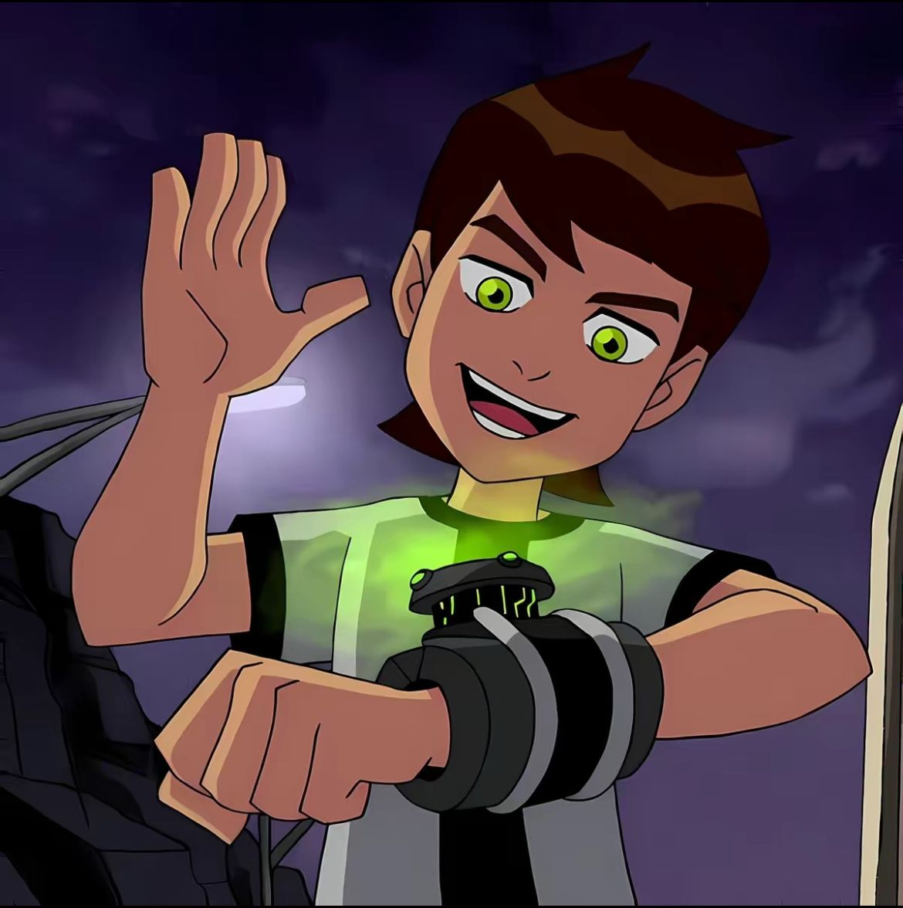

Nome completo:Benjamin Kirby Tenyson.
Idade: 10 anos
Benjamin é o protagonista do desenho.
Um menino de bom coração, impulsivo e muito corajoso.
Encontrou o Ominitrix, um dispositivo alienígena que permite se transformar em vários alienígenas.
Ominitrix
Conheça o dublador do Ben